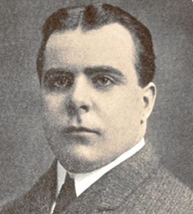

Frederick Ingersoll
| 1876 | Frederick Ingersoll is born in New Jersey (United States) |
| 1890s | Frederick designs multiple attractions, including figure eight coasters, scenic railroads and Shoot-the-Chutes. |
| 1904 | The Luna Park Amusement Company is formed. |
| 1908 | High maintenance costs lead Ingersoll to declare bankruptcy. |
| 1927 | Ingersoll is found dead by asphyxiation of gas fumes on October 23. The death was ruled an apparent suicide. |